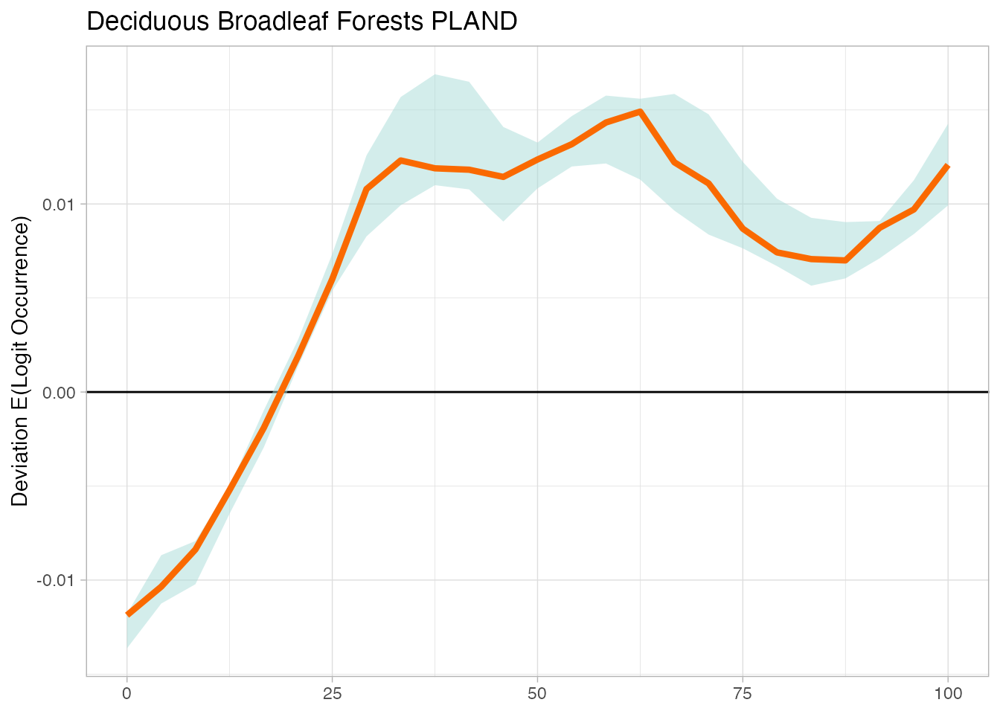
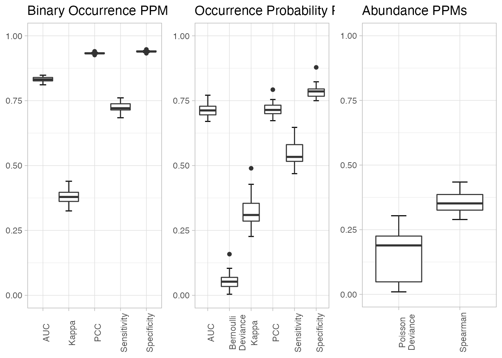
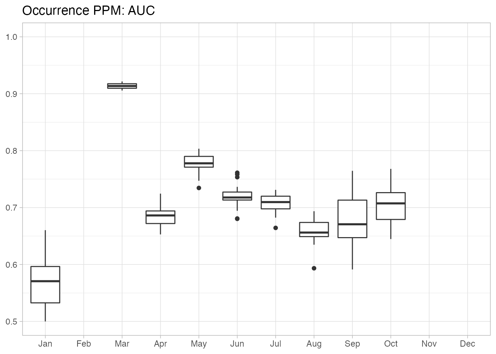

Non-raster Data: Using Predictor Importance, Partial Dependence, and Predictive Performance Metrics
Tom Auer, Daniel Fink
2022-03-15
Source:vignettes/ebirdst-non-raster.Rmd
ebirdst-non-raster.RmdIntroduction
Beyond estimates of occurrence and relative abundance, the eBird Status and Trends products contain estimates of predictor importance (PI), partial dependence (PD), and predictive performance metrics (PPMs). The PPMs can be used to evaluate statistical performance of the models, either over the entire spatiotemporal extent of the model results, or for a specific region and season. Predictor importances (PIs) and partial dependences (PDs can be used to understand relationships between the occurrence or count response and predictors, most notably the land cover variables used in the model. The functions described in this section help load and analyse these data. More details about predictive performance metrics and how they were calculated and interpreted can be found in Fink et al. (2019).
Data Structure
IMPORTANT. AFTER DOWNLOADING THE RESULTS, DO NOT CHANGE THE FILE STRUCTURE. All functionality in this package relies on the structure inherent in the delivered results. Changing the folder and file structure will cause errors with this package.
The non-raster data are stored in two SQLite databases:
-
pi-pd.db: predictor importance and partial dependence estimates for each stixel used to fit the model. -
predictions.db: predictions on a test dataset consisting of checklists not used in model fitting.
The ebirdst package provides functions for accessing these, such that you should never have to handle them manually.
PI and PD
We’ll start by loading the PI and PD data from the example data package for Yellow-bellied Sapsucker in Michigan.
library(ebirdst)
library(dplyr)
# Because the non-raster data is large, there is a parameter on the
# ebirdst_download function that defaults to downloading only the raster data.
# To access the non-raster data, set tifs_only = FALSE.
sp_path <- ebirdst_download(species = "example_data", tifs_only = FALSE)
# predictor importance
pis <- load_pis(sp_path)
glimpse(pis)
#> Rows: 3,310
#> Columns: 78
#> $ stixel_id <chr> "1-169.6-NSEWWEWW", "1-108.6-NSSEEWNW…
#> $ lat <dbl> 46.30995, 42.42114, 43.67917, 44.1863…
#> $ lon <dbl> -86.72710, -83.54380, -84.03641, -85.…
#> $ date <dbl> 0.50088033, 0.34482368, 0.67344010, 0…
#> $ is_stationary <dbl> 1.73686039, 18.42845245, 0.49824372, …
#> $ year <dbl> 8.3360735, 9.0877797, 3.3309672, 4.63…
#> $ day <dbl> 11.3270841, 76.2582305, 2.6345454, 4.…
#> $ solar_noon_diff <dbl> 22.0603355, 17.0679989, 4.9493807, 10…
#> $ effort_hrs <dbl> 42.2916291, 86.3899497, 9.5691303, 17…
#> $ effort_distance_km <dbl> 12.6832239, 44.2907286, 3.3851198, 5.…
#> $ number_observers <dbl> 3.288202581, 3.728937836, 1.285287497…
#> $ score <dbl> 21.6441015, 25.5800197, 9.4593466, 13…
#> $ eastness_median <dbl> 11.4480056, 11.0825726, 2.5708314, 5.…
#> $ eastness_sd <dbl> 14.6592890, 16.6060519, 2.3999537, 6.…
#> $ northness_median <dbl> 11.1658192, 13.8988250, 2.8692931, 5.…
#> $ northness_sd <dbl> 15.5729942, 14.2263108, 2.8347340, 7.…
#> $ elev_median <dbl> 22.7490493, 18.4225420, 3.0621725, 6.…
#> $ elev_sd <dbl> 11.4262689, 12.3861965, 2.6662381, 5.…
#> $ island <int> 0, 0, 0, 0, 0, 0, 0, 0, 0, 0, 0, 0, 0…
#> $ intertidal_fs_c1_1500_ed <dbl> 0, 0, 0, 0, 0, 0, 0, 0, 0, 0, 0, 0, 0…
#> $ intertidal_fs_c1_1500_pland <dbl> 0, 0, 0, 0, 0, 0, 0, 0, 0, 0, 0, 0, 0…
#> $ mcd12q1_lccs1_fs_c1_1500_ed <dbl> 0.14078947, 1.43435629, 0.18632471, 1…
#> $ mcd12q1_lccs1_fs_c1_1500_pland <dbl> 0.168257217, 0.951096496, 0.128944590…
#> $ mcd12q1_lccs1_fs_c2_1500_ed <dbl> 0, 0, 0, 0, 0, 0, 0, 0, 0, 0, 0, 0, 0…
#> $ mcd12q1_lccs1_fs_c2_1500_pland <dbl> 0, 0, 0, 0, 0, 0, 0, 0, 0, 0, 0, 0, 0…
#> $ mcd12q1_lccs1_fs_c11_1500_ed <dbl> 2.750101445, 0.012648084, 0.195781258…
#> $ mcd12q1_lccs1_fs_c11_1500_pland <dbl> 2.909884370, 0.008533362, 0.066898839…
#> $ mcd12q1_lccs1_fs_c12_1500_ed <dbl> 0, 0, 0, 0, 0, 0, 0, 0, 0, 0, 0, 0, 0…
#> $ mcd12q1_lccs1_fs_c12_1500_pland <dbl> 0, 0, 0, 0, 0, 0, 0, 0, 0, 0, 0, 0, 0…
#> $ mcd12q1_lccs1_fs_c13_1500_ed <dbl> 0.051595143, 0.165698291, 0.000000000…
#> $ mcd12q1_lccs1_fs_c13_1500_pland <dbl> 0.007885158, 0.014097561, 0.000000000…
#> $ mcd12q1_lccs1_fs_c14_1500_ed <dbl> 13.04840239, 5.84305663, 9.70223958, …
#> $ mcd12q1_lccs1_fs_c14_1500_pland <dbl> 22.1780772, 5.5248259, 7.9647364, 8.3…
#> $ mcd12q1_lccs1_fs_c15_1500_ed <dbl> 9.15742044, 0.88690266, 1.41852274, 3…
#> $ mcd12q1_lccs1_fs_c15_1500_pland <dbl> 9.96608942, 0.93801828, 2.00108458, 2…
#> $ mcd12q1_lccs1_fs_c16_1500_ed <dbl> 0, 0, 0, 0, 0, 0, 0, 0, 0, 0, 0, 0, 0…
#> $ mcd12q1_lccs1_fs_c16_1500_pland <dbl> 0, 0, 0, 0, 0, 0, 0, 0, 0, 0, 0, 0, 0…
#> $ mcd12q1_lccs1_fs_c21_1500_ed <dbl> 10.4627065, 7.7615955, 2.4854609, 5.7…
#> $ mcd12q1_lccs1_fs_c21_1500_pland <dbl> 16.0953089, 7.0834174, 6.4837451, 6.2…
#> $ mcd12q1_lccs1_fs_c22_1500_ed <dbl> 1.0535637, 10.6589947, 3.8522168, 6.1…
#> $ mcd12q1_lccs1_fs_c22_1500_pland <dbl> 0.8011022, 12.5594966, 7.6254137, 5.6…
#> $ mcd12q1_lccs1_fs_c255_1500_ed <dbl> 0, 0, 0, 0, 0, 0, 0, 0, 0, 0, 0, 0, 0…
#> $ mcd12q1_lccs1_fs_c255_1500_pland <dbl> 0, 0, 0, 0, 0, 0, 0, 0, 0, 0, 0, 0, 0…
#> $ mcd12q1_lccs1_fs_c31_1500_ed <dbl> 8.6148170, 9.9160136, 2.9347927, 7.65…
#> $ mcd12q1_lccs1_fs_c31_1500_pland <dbl> 7.4438603, 9.3446019, 5.3296896, 9.01…
#> $ mcd12q1_lccs1_fs_c32_1500_ed <dbl> 0.95026967, 4.29990544, 0.45147147, 1…
#> $ mcd12q1_lccs1_fs_c32_1500_pland <dbl> 0.55316646, 5.16197385, 0.10550376, 0…
#> $ mcd12q1_lccs1_fs_c41_1500_ed <dbl> 0, 0, 0, 0, 0, 0, 0, 0, 0, 0, 0, 0, 0…
#> $ mcd12q1_lccs1_fs_c41_1500_pland <dbl> 0, 0, 0, 0, 0, 0, 0, 0, 0, 0, 0, 0, 0…
#> $ mcd12q1_lccs1_fs_c42_1500_ed <dbl> 0, 0, 0, 0, 0, 0, 0, 0, 0, 0, 0, 0, 0…
#> $ mcd12q1_lccs1_fs_c42_1500_pland <dbl> 0, 0, 0, 0, 0, 0, 0, 0, 0, 0, 0, 0, 0…
#> $ mcd12q1_lccs1_fs_c43_1500_ed <dbl> 0, 0, 0, 0, 0, 0, 0, 0, 0, 0, 0, 0, 0…
#> $ mcd12q1_lccs1_fs_c43_1500_pland <dbl> 0, 0, 0, 0, 0, 0, 0, 0, 0, 0, 0, 0, 0…
#> $ mcd12q1_lccs2_fs_c25_1500_ed <dbl> 0.0000000, 5.9232043, 1.3713915, 1.10…
#> $ mcd12q1_lccs2_fs_c25_1500_pland <dbl> 0.03490805, 5.21551495, 1.28075439, 1…
#> $ mcd12q1_lccs2_fs_c35_1500_ed <dbl> 0, 0, 0, 0, 0, 0, 0, 0, 0, 0, 0, 0, 0…
#> $ mcd12q1_lccs2_fs_c35_1500_pland <dbl> 0, 0, 0, 0, 0, 0, 0, 0, 0, 0, 0, 0, 0…
#> $ mcd12q1_lccs2_fs_c36_1500_ed <dbl> 0.06635041, 6.28609731, 2.25559086, 1…
#> $ mcd12q1_lccs2_fs_c36_1500_pland <dbl> 0.15756788, 6.67986530, 3.36702904, 3…
#> $ mcd12q1_lccs3_fs_c27_1500_ed <dbl> 2.74756721, 1.09676893, 0.54222618, 4…
#> $ mcd12q1_lccs3_fs_c27_1500_pland <dbl> 2.35277799, 0.98942111, 0.47988197, 3…
#> $ mcd12q1_lccs3_fs_c50_1500_ed <dbl> 2.81419332, 7.69548046, 0.78421380, 1…
#> $ mcd12q1_lccs3_fs_c50_1500_pland <dbl> 2.55795070, 10.06800195, 1.04519411, …
#> $ mcd12q1_lccs3_fs_c51_1500_ed <dbl> 0.00000000, 0.04313154, 0.00000000, 0…
#> $ mcd12q1_lccs3_fs_c51_1500_pland <dbl> 0.00000000, 0.02723233, 0.00000000, 0…
#> $ gp_rtp_1 <dbl> 0.00000000, 7.06547808, 0.88657383, 0…
#> $ gp_rtp_2 <dbl> 10.61321851, 6.78200580, 1.60907483, …
#> $ gp_rtp_3 <dbl> 10.3390283, 18.3259132, 3.7044495, 4.…
#> $ gp_rtp_4 <dbl> 0.3434024668, 0.6480894088, 0.0005555…
#> $ gp_rtp_5 <dbl> 2.0032347, 13.2307839, 1.5573661, 3.9…
#> $ astwbd_fs_c1_1500_ed <dbl> 0, 0, 0, 0, 0, 0, 0, 0, 0, 0, 0, 0, 0…
#> $ astwbd_fs_c1_1500_pland <dbl> 0, 0, 0, 0, 0, 0, 0, 0, 0, 0, 0, 0, 0…
#> $ astwbd_fs_c2_1500_ed <dbl> 0.671402435, 1.672627295, 0.507873200…
#> $ astwbd_fs_c2_1500_pland <dbl> 0.90665643, 1.80264416, 0.31356354, 0…
#> $ astwbd_fs_c3_1500_ed <dbl> 7.5568283, 10.9095298, 1.6484049, 3.9…
#> $ astwbd_fs_c3_1500_pland <dbl> 9.9276421, 13.4055614, 1.6126631, 5.5…
#> $ ntl_mean <dbl> 16.9331370, 20.2363202, 3.4757637, 9.…
#> $ ntl_sd <dbl> 12.0323973, 19.3811427, 6.5526256, 7.…
# partial dependence
pds <- load_pds(sp_path)
glimpse(pds)
#> Rows: 1,818,380
#> Columns: 7
#> $ stixel_id <chr> "1-169.6-NSEWWEWW", "1-169.6-NSEWWEWW", "1-169.6-NSEWW…
#> $ lat <dbl> 46.30995, 46.30995, 46.30995, 46.30995, 46.30995, 46.3…
#> $ lon <dbl> -86.7271, -86.7271, -86.7271, -86.7271, -86.7271, -86.…
#> $ date <dbl> 0.5008803, 0.5008803, 0.5008803, 0.5008803, 0.5008803,…
#> $ predictor <chr> "effort_hrs", "effort_hrs", "effort_hrs", "effort_hrs"…
#> $ predictor_value <dbl> 0.017000, 0.050000, 0.083000, 0.150000, 0.167000, 0.18…
#> $ response <dbl> 0.1285892, 0.1325770, 0.1324185, 0.1603675, 0.1716442,…Notice that the data in both these data frames is provided for each stixel, identified by a stixel_id.
Selecting Region and Season
When working with Predictive Performance Metrics (PPMs), PIs, or PDs, it is very common to select a subset of space and time for analysis. In ebirdst this is done by creating a spatiotemporal extent object with ebirdst_extent(). These objects define the region and season for analysis and are passed to many functions in ebirdst.
# define a spatiotemporal extent
lp_extent <- ebirdst_extent(c(xmin = -86, xmax = -83, ymin = 42, ymax = 45),
t = c(0.425, 0.475))
print(lp_extent)
#> eBird Status & Trends extent:
#> Bounding box: xmin -86; ymin 42; xmax -83; ymax 45
#> CRS: +proj=longlat +datum=WGS84 +no_defs
#> Temporal extent: 06-05 - 06-23
# subset to this extent
pis_ss <- ebirdst_subset(pis, ext = lp_extent)
nrow(pis)
#> [1] 3310
nrow(pis_ss)
#> [1] 125To understand which stixels are contributing to estimates within a given spatiotemporal extent, stixel_footprint() generate a RasterLayer depicting where a majority of the information is coming from within a given extent. The map ranges from 0 to 1, with pixels have a value of 1 meaning that 100% of the selected stixels are contributing information at that pixel. Calling plot() on the output of this function will map the stixel footprint as well as centroids of all the stixels.
par(mfrow = c(1, 1), mar = c(0, 0, 0, 6))
footprint <- stixel_footprint(sp_path, ext = lp_extent)
plot(footprint)
Plot Predictor Importance
The plot_pis() function generates a bar plot showing a rank of the most important predictors within a spatiotemporal subset. There is an option to show all predictors or to aggregate FRAGSTATS by the land cover types.
# with all classes
plot_pis(pis, ext = lp_extent, by_cover_class = FALSE, n_top_pred = 15)
# aggregating fragstats for cover classes
plot_pis(pis, ext = lp_extent, by_cover_class = TRUE, n_top_pred = 15)
Plotting Partial Dependence
Smoothed partial dependence curves for a given predictor can be plotted using plot_pds(). Confidence intervals are estimated through a processing of subsampling and bootstrapping. This function returns the smoothed data and CIs and plots these data. For example, let’s look at PD curves for checklist start time, expressed as the difference from solar noon, and the percentage of broadleaf forest cover. The full list of predictors see the data frame ebirdst_predictors.
# in the interest of speed, run with 5 bootstrap iterations
# in practice, best to run with the default number of iterations (100)
pd_smooth <- plot_pds(pds, "solar_noon_diff", ext = lp_extent, n_bs = 5)
dplyr::glimpse(pd_smooth)
#> Rows: 25
#> Columns: 4
#> $ x <dbl> -1.197944e+01, -1.098123e+01, -9.983009e+00, -8.984792e+00, …
#> $ pd_median <dbl> 0.0043262826, 0.0043773338, 0.0044533411, 0.0045293485, 0.00…
#> $ pd_lower <dbl> 0.0012936536, 0.0018160488, 0.0027228892, 0.0036297296, 0.00…
#> $ pd_upper <dbl> 0.0077324375, 0.0073656194, 0.0068719813, 0.0067628259, 0.00…
# deciduous broadleaf forest
plot_pds(pds, "mcd12q1_lccs1_fs_c14_1500_pland", ext = lp_extent, n_bs = 5)
Predictive Performance Metrics
Beyond confidence intervals provided for the abundance estimates, the centroid data can also be used to calculate predictive performance metrics, to get an idea as to whether there is substantial statistical performance to evaluate information provided by PIs and PDs (as well as abundance and occurrence information). Three types of PPMs are calculated:
- Binary or range-based PPMs assess the ability of model to predict range boundaries
- Occurrence PPMs assess the occurrence probability predictions
- Abundance PPMs assess the predicted abundance
Both the occurrence and count PPMs are within-range metrics, meaning the comparison between observations and predictions is only made within the range where the species occurs.
The function ebirdst_ppms() calculates a suite of PPMs for a given spatiotemporal extent. The results can then be plotted with plot().
ppms <- ebirdst_ppms(sp_path, ext = lp_extent)
plot(ppms)
ebirdst_ppms_ts() can be used to get a time series of PPMs, calculating the full suite either at a weekly or monthly resolution. plot() can be used to visualise these PPM time series for a given PPM.
ppms_monthly <- ebirdst_ppms_ts(sp_path, ext = lp_extent, summarize_by = "months")
# plot binary kappa
plot(ppms_monthly, type = "binary", metric = "kappa")
# plot occurrence probability auc
plot(ppms_monthly, type = "occurrence", metric = "auc")
References
Fink, D., T. Damoulas, & J. Dave, J. 2013. Adaptive Spatio-Temporal Exploratory Models: Hemisphere-wide species distributions from massively crowdsourced eBird data. In Twenty-Seventh AAAI Conference on Artificial Intelligence.
Fink, D., W.M. Hochachka, B. Zuckerberg, D.W. Winkler, B. Shaby, M.A. Munson, G. Hooker, M. Riedewald, D. Sheldon, & S. Kelling. 2010. Spatiotemporal exploratory models for broad‐scale survey data. Ecological Applications, 20(8), 2131-2147.
Fink, D., T. Auer, A. Johnston, V. Ruiz‐Gutierrez, W.M. Hochachka, & S. Kelling. 2019. Modeling avian full annual cycle distribution and population trends with citizen science data. Ecological Applications, 00(00):e02056. https://doi.org/10.1002/eap.2056